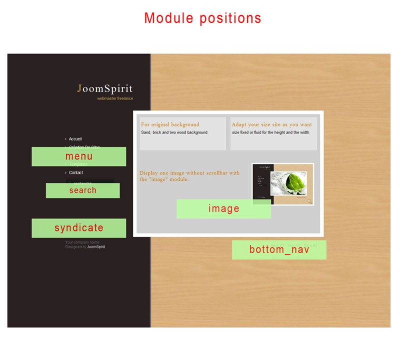

You can access to template manager with the top menu : "Extensions --> Template Manager --> brown "
With "brown Template", you can :
It's very simple. You must publish your modules with the right position :
It's very simple.
You create a new module (html personnalize) with the position : "image"
In this module, you insert your image with the right size (depend of your configuration) and publish it.
With Joomla, you can't assign an item menu for a module. So, you must create an article. You can now create your item menu for this article.
For finish, you create and publy your new module with "image" position and assign it for this item menu.
The template display your module and not the article.
If you want change the background of tooltips, change the "bubble.png" in images directory of orange template.